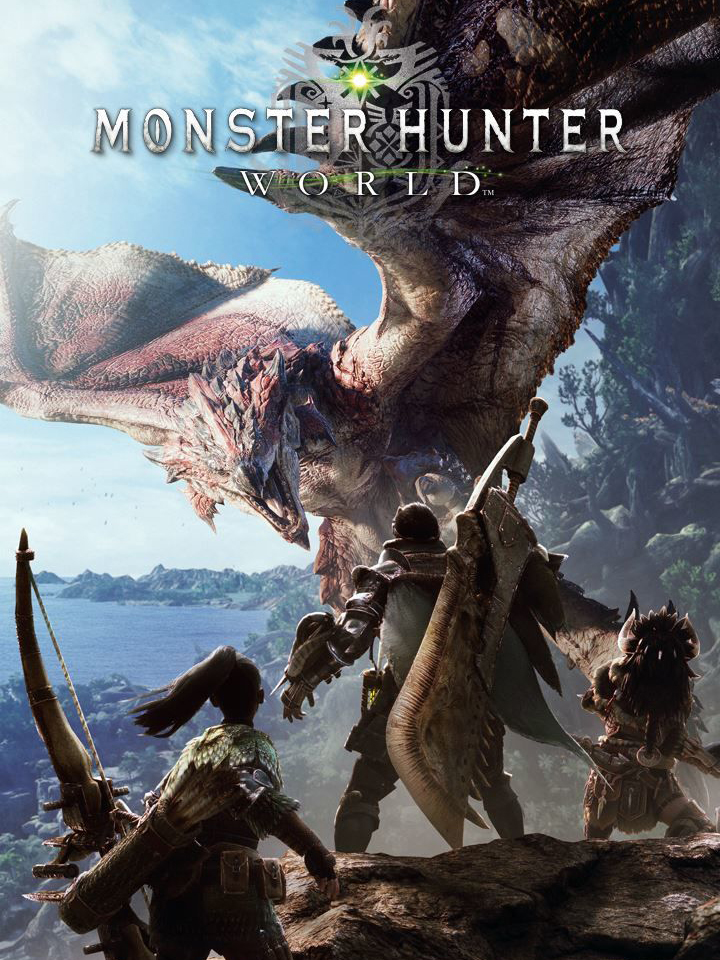

Monster Hunter: World
Monster Hunter: World
Detalhes
 |
|
| Tempo de jogo | 6d 10h 48m 0s |
| Última Atividade | 06/06/2026 23:47:45 |
| Adicionado | 07/06/2026 0:35:51 |
| Modificado | 07/06/2026 0:40:41 |
| Status de Conclusão | Jogado |
| Biblioteca | Steam |
| Fonte | Steam |
| Plataforma | PC (Windows) |
| Data de Lançamento | 26/01/2018 |
| Pontuação da Comunidade | 84 |
| Avaliação da crítica | 93 |
| Pontuação do Usuário | |
| Gênero | Adventure Role-playing (RPG) |
| Desenvolvedor | Capcom |
| Editor | Capcom |
| Funções | Co-Operative Multiplayer Single Player |
| Links | Official Website Wikipedia YouTube Community Wiki Subreddit Steam Twitch Xbox Playstation |
| Tag | |
Descrição
Conheçam o Novo Mundo! Assuma o papel de caçador e mate monstros ferozes em um ecossistema realista e natural, onde você pode usar a paisagem e os diversos habitantes a seu favor. Cace sozinho ou em cooperação com até três outros jogadores e use os materiais coletados de adversários derrotados para montar novos equipamentos e encarar feras maiores e mais difíceis!
Como caçador, você aceitará missões para caçar monstros em uma variedade de habitats.
Vença esses monstros e receba materiais que você pode usar para criar armas e armaduras mais fortes e caçar monstros ainda mais perigosos.
Em Monster Hunter: World, o jogo mais recente da série, você pode curtir a experiência máxima de caçada, usando tudo à sua disposição para caçar monstros em um novo mundo repleto de surpresas e emoções.

Ambientação
Uma vez a cada década, dragões anciões atravessam o oceano para a terra conhecida como o Novo Mundo, em uma viagem chamada de Migração dos Anciões.
Para entender esse misterioso fenômeno, a Guilda formou a Comissão de Pesquisa e a enviou para o Novo Mundo em grandes frotas.
Quando a Comissão envia sua Quinta Frota em busca do colossal dragão ancião conhecido como Zorah Magdaros, um caçador está prestes a embarcar em uma jornada maior do que tudo que jamais imaginou.

Há vários locais repletos de vida nativa. Expedições a esses locais certamente permitirão descobertas interessantes.
Seu equipamento dará a você todo o poder necessário para talhar seu lugar no Novo Mundo.
O arsenal do caçador
Caçadores têm catorze tipos diferentes de armas à disposição, cada um com características e ataques únicos.
Muitos caçadores se tornam proficientes em vários tipos, enquanto outros preferem dominar apenas um.

Guialumes
Rastros de monstros, como pegadas e cortes, cobrem cada local.
Seus guialumes lembrarão do cheiro de um monstro e guiarão você até outros rastros próximos.
E quanto mais rastros você juntar, mais informações seus guialumes darão.

Atiradeira
A atiradeira é uma ferramenta indispensável para um caçador, permitido que você se arme com pedras e nozes que podem ser colhidas em cada local.
Desde táticas de distração até criar atalhos, a atiradeira tem diversos usos e permite caçar de formas novas e interessantes.

Ferramentas Especiais
Ferramentas Especiais ativam efeitos poderosos por tempo limitado, e você pode equipar até duas ao mesmo tempo.
Simples de usar, elas podem ser selecionadas e ativadas como qualquer outro item que você leva para a caçada.

Amigatos
Amigatos são os companheiros dos caçadores em campo, especializados em uma variedade de habilidades de suporte ofensivas, defensivas e restauradoras.
O Amigato do caçador se junta à Quinta Frota com muito orgulho, um membro legítimo da Comissão como qualquer outro caçador.

INTRODUÇÃO
Visão geral
Enfrente monstros gigantes em cenários épicos.Como caçador, você aceitará missões para caçar monstros em uma variedade de habitats.
Vença esses monstros e receba materiais que você pode usar para criar armas e armaduras mais fortes e caçar monstros ainda mais perigosos.
Em Monster Hunter: World, o jogo mais recente da série, você pode curtir a experiência máxima de caçada, usando tudo à sua disposição para caçar monstros em um novo mundo repleto de surpresas e emoções.
Ambientação
Uma vez a cada década, dragões anciões atravessam o oceano para a terra conhecida como o Novo Mundo, em uma viagem chamada de Migração dos Anciões.
Para entender esse misterioso fenômeno, a Guilda formou a Comissão de Pesquisa e a enviou para o Novo Mundo em grandes frotas.
Quando a Comissão envia sua Quinta Frota em busca do colossal dragão ancião conhecido como Zorah Magdaros, um caçador está prestes a embarcar em uma jornada maior do que tudo que jamais imaginou.
ECOSSISTEMA
Um mundo que exala vidaHá vários locais repletos de vida nativa. Expedições a esses locais certamente permitirão descobertas interessantes.
CAÇA
Um arsenal diverso e uma parceira indispensávelSeu equipamento dará a você todo o poder necessário para talhar seu lugar no Novo Mundo.
O arsenal do caçador
Caçadores têm catorze tipos diferentes de armas à disposição, cada um com características e ataques únicos.
Muitos caçadores se tornam proficientes em vários tipos, enquanto outros preferem dominar apenas um.
Guialumes
Rastros de monstros, como pegadas e cortes, cobrem cada local.
Seus guialumes lembrarão do cheiro de um monstro e guiarão você até outros rastros próximos.
E quanto mais rastros você juntar, mais informações seus guialumes darão.
Atiradeira
A atiradeira é uma ferramenta indispensável para um caçador, permitido que você se arme com pedras e nozes que podem ser colhidas em cada local.
Desde táticas de distração até criar atalhos, a atiradeira tem diversos usos e permite caçar de formas novas e interessantes.
Ferramentas Especiais
Ferramentas Especiais ativam efeitos poderosos por tempo limitado, e você pode equipar até duas ao mesmo tempo.
Simples de usar, elas podem ser selecionadas e ativadas como qualquer outro item que você leva para a caçada.
Amigatos
Amigatos são os companheiros dos caçadores em campo, especializados em uma variedade de habilidades de suporte ofensivas, defensivas e restauradoras.
O Amigato do caçador se junta à Quinta Frota com muito orgulho, um membro legítimo da Comissão como qualquer outro caçador.